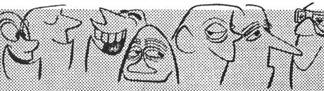

If there's anything an editor likes better than a well slanted cartoon, it's a well slanted, offbeat cartoon feature. Preferably, something he doesn't see arrive (in dozens) every day of the week. The CHARACTER SPREAD is such a cartoon feature.
And what is a CHARACTER SPREAD?
Pick a subject. Any subject. Sportscars, lawnmowing, seduction, fishing, drinking, sleeping, TV viewing . . . anything. Then, figure out 8 to 10 types of guys whose viewpoints on that subject just about cover it from every angle.
Then - draw them . . . being certain you pack plenty of Oomph into each characterization and keep the backgrounds simple to the point of almost zero. Include only the props necessary to put each characterization across. Write two to six sentences for each character, put the whole works in the mail to whichever magazine it's slanted . . . and wait for the fat check to arrive from a delighted and grateful editor.
The CHARACTER SPREAD - besides being sufficiently offbeat to warm the editorial heart - has the added advantage of being a fluid product insofar as the editor's space problems are concerned. If he is unable to filch the necessary space to use the whole spread at one time, point out that each unit (each Character) can be used one at a time over a series of issues. Most editors, however, seem to prefer using the spread all at once since it carries more wallop that way.
Although many professional cartoonists use the CHARACTER SPREAD from time to time, it's a leadpipe cinch few editors of house organs and the smaller trade journals see decently built CHARACTER SPREADS. If you begin marketing this cartoon form to them, you're gonna make all kinds of money. Even in the TJ field, it's common to ask - and get - $100 for a 10 part CHARACTER SPREAD. This is, of course, assuming the drawings are good, the short copy fairly clever and the slant right on target.
Don't get the CHARACTER SPREAD confused with the ordinary, garden variety gag spread which is comprised of several gag cartoons all on the same subject.
The CHARACTER SPREAD has no gags, no gaglines . . . only carefully delineated types and accompanying short sentences with each character. It should go without saying (but I'll murmur it, to be safe) that you draw each character on a separate sheet of 20 pound bond paper, size 8 1/2 by 11 inches and the whiter the paper and the blacker the inker, the everlovin' better.
Carl Kohler, Noted Neurotic and Professional Loafer, hat done many of these CHARACTER SPREADS, selling them to all kinds of magazines for all kinds of prices ranging from $50.00 to $400.00 per spread. Here, taken from an exclusive interview, is precisely how he works:
Recently, Kohler drummed up enough energy to turn out a CHARACTER SPREAD which he titled, TIME FOR A FEW QUICK SHOTS.
Basically, the spread was to make gentle sport of hunting enthusiasts. It was divided into 8 parts: THE SPARTAN, THE, TENDERFOOT, THE CAMP BUM, THE IMPOSTER, THE STRINGMAN, THE IMPROVISOR, THE DIEHARD and TELESCOPIC VS OPEN SIGHT. Let's take two units for closer examination:
THE SPARTAN: Drawing shows a lusty, muscular lout wearing only shorts, a hunter's cap and boots, packing a huge knife and carrying a rifle. No background.
Accompanying copy reads: "This rugged type thinks camping equipment is strictly for sissies. Prefers to live off the land' and is never happier than when well isolated from civilization, depending entirely upon his woodsmanship for survival - and sometimes he actually survives to his everlasting pride. "
THE IMPROVISOR: Drawing shows a crafty-looking chap wearing a disguise of assorted branches and leaves, holding all manner of moose calls, bear calls, squirrel calls and other gadgets. Vignetted background of trees.
Copy says: "This boy is nuts about scientifically fooling the game. Has perfected the art and even added a few gismos of his own. Unfortunately he spends so much time luring the unwary game - he has never so much as gotten off a single shot at anything. "
The CHARACTER SPREAD technique can easily be applied to any subject. If you should choose Cars, show 8 or 10 different types of drivers. If Electrical Wiring, Salesmanship or Plumbing is your choice, show 8 or 10 varying types of individuals engaged in those topics. But keep your spread to no more than 10 drawings.
It's a splendid idea to always include a short note with every spread mailed, explaining that it may be used a unit at a time if the editor is cramped for entertainment space . . . and very honestly stating your minimum rate for the property. It's fabulous how many allegedly professional cartoonists are in a state of semi-poverty because they are too shy to state what they would like in the way of pay if the editor buys. There are even some dullarts who haven't yet learned most editors like to dikker.
With approximately 8,000 markets for the CHARACTER SPREAD, you should be able to land on target with no trouble . . . and I hope you do, just as often as you like.
|
 |
|
|